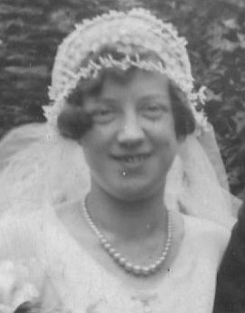

Doris Elizabeth Wood (née Standing) 1905 - 1989
[ Home ] | [ Calendar ] | [ Surnames Index ] | [ Census Index ] | [ Family History ]The child of Walter Standing (a laundry foreman) and Jane Clark (a head packer in laundry), Doris Standing, the fourth cousin once-removed on the father's side of Nigel Horne, was born in Charlton, London, England on Jul 4, 19051,2,3,4 and married Albert Wood (with whom she had 1 child, Derek Albert) in Greenwich, London, England around Aug 19315.
During her life, she was living at 90 Charlton Lane in Charlton on Apr 2, 19111; at Brook Farm, Plaxtol, Kent, England on Sep 29, 19392; and at 39 Walpole Road, Walthamstow, London in 19716.
She died on Jul 6, 1989 in Blackheath, London, England4.
Parents
- Walter William was born on Jul 5, 1873
- Jane Elizabeth was born on Nov 28, 1876
Children
- Derek Albert was born on Sep 21, 1934
Citations
- 1911 Census for England & Wales - Findmypast (was age 5 and the daughter of the head of the household)
- 1939 Register - Findmypast (was recorded at this address)
- England & Wales births 1837-2006 - Findmypast
- England & Wales deaths 1837-2007 - Findmypast
- England & Wales Marriages 1837-2005 - Findmypast
- From her husband's probate record
Media
Doris Elizabeth Standing

England & Wales deaths 1837-2007 - BMD/D/1989/7/77660264
England & Wales marriages 1837-2005 - BMD/M/1931/3/AZ/001342/018
England & Wales births 1837-2006 - BMD/B/1905/3/AZ/000566/084
1939 Register Transcription - TNA-R39-1834-1834C-012-26
Family Tree

Generated by ged2site. Last updated on Jun 11, 2024